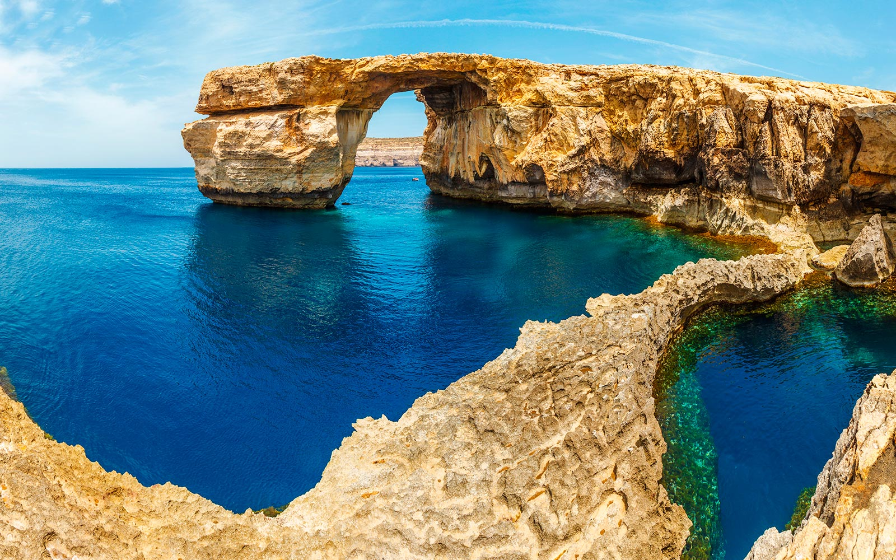

Blue Lagoon
Preciosa vista del agua transparente y azul (Comino, Malta)

Azzure Window
Arco natural antes de su caída (Gozo, Malta)

Catedral de San Juan
Preciosa vista del interior de la catedral en La Valeta

St. Peter's Pool
Famoso acantalido desde el que saltar al agua (Marsaxlokk, Malta)